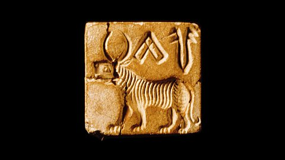
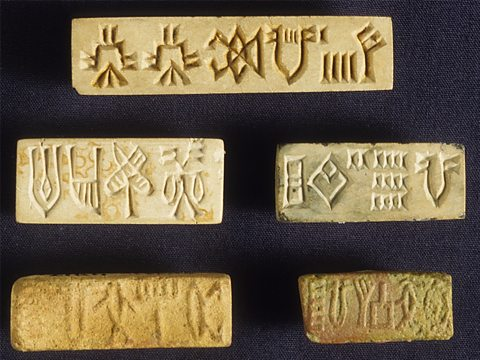
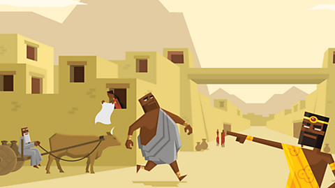
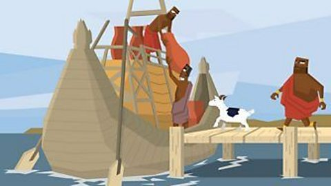

What were Indus homes like?
It was very hot in the Indus Valley so people spent a lot of time outside.
Most people had small homes which were also used as workshops.
There was not much space to relax.
Richer families had courtyards. These were nice open spaces.
Children could play there with toys or with pets, such as monkeys and birds.
People who did not have a courtyard would still have a flat roof.
These roofs were strong enough to walk on. Families used them as an extra room. It was a cool place to sleep on a hot night and somewhere you could sit with friends.
Growing up in the Indus Valley
We only know a little about what it was like to be a child growing up in the Indus Valley cities.
We don't know how many children went to school. A scribe would teach some children how to read and write and a priest would teach religious lessons.
Even if they didn't go to school, most children worked hard.
Children were taught how to make things, how to farm and how to hunt.
It wasn't all work though. Children could play in the courtyards of houses, and probably on the flat roofs too. The roof could be a fun place to play. You could wave to your friends across the street!
Children might have played board games with counters and dice. Archaeologists have found cube dice with six sides and spots, just like the ones we use today. Historians think the Indus people invented dice.
How did Indus people buy things?
Indus Valley traders did not use money, so they probably exchanged goods. They might swap two sacks of wheat for one basket of minerals.
Archaeologists discovered flat pieces of stone with writing carved into them. At first they were confused, but then they realised these stones were seals. Over 3,500 have now been found!
If you pressed the seal into soft clay, it left a copy of itself on the clay. When the clay dried hard, it could be used as a tag, which could then be tied to a pot or basket.
What did the Indus seals look like?
- 
Image caption, This seal shows a tiger with many stripes. Tigers were common in the time of the Indus civilisation.


1 of 5
Archaeologists think that the Indus traders might have used seals like labels, to show who owned a sack of grain, or that the correct city tax had been paid.
Lots of seals have pictures of animals on them, including elephants, rhinoceros, tigers and fish-eating crocodiles.
Activities
Activity 1: Daily life
Click around below to find out more about daily life in the Indus Valley.
Activity 2: Jobs
Click below on these Indus people to find out about their jobs.
Activity 3: Quiz – Life in the Indus Valley
Bitesize Primary games. game
Play fun and educational primary games in science, maths, English, history, geography, art, computing and modern languages.
More on Indus Valley
Find out more by working through a topic
- 
- count4 of 8
- count5 of 8
- count6 of 8
